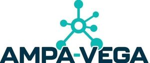

Trade Mark Journal No.2026/009 27 February 2026
WO0000001901994 (42,44)
Office of origin: United States of America
Date of International Registration:6 January 2026
Date of designation in the UK:
6 January 2026

The mark consists of an open circle from which extend six lines ending in filled circles, all in blue. Below that appears the wording AMPA-VEGA, with AMPA and VEGA appearing in dark navy blue and the hyphen appearing in blue.
The mark contains the colours blue and dark navy blue.
The mark consists of an open circle from which extend six lines ending in filled circles, all in blue. Below that appears the wording AMPA-VEGA, with AMPA and VEGA appearing in dark navy blue and the hyphen appearing in blue.
International priority date claimed: 11 July 2025
(United States of America)
(99278648)
- Class 42
- Pharmaceutical research and development services; conducting clinical trials for pharmaceutical preparations; pharmaceutical research services and pharmaceutical product evaluation, namely, conducting post-authorization research for the marketing of pharmaceutical preparations and evaluating epidemiological results; pharmaceutical research and development services in the field of anhedonia, major depressive disorder and mood disorders; conducting clinical trials for others for pharmaceutical preparations for the treatment and prevention of anhedonia, major depressive disorder and mood disorders; pharmaceutical research services and pharmaceutical product evaluation, namely, conducting post-authorization research for the marketing of pharmaceutical preparations for the treatment and prevention of anhedonia, major depressive disorder and mood disorders, and evaluating epidemiological results for treatments for anhedonia, major depressive disorder and mood disorders; providing medical and scientific research information to patients and practitioners in the field of clinical trials, namely, as to the results of clinical trials; providing medical and scientific research information to patients and practitioners in the field of clinical trials, namely, as to the results of clinical trials pertaining to therapies and treatments for anhedonia, major depressive disorder and mood disorders.
- Class 44
- Providing medical information; providing medical information relating to therapies and treatments for anhedonia, major depressive disorder and mood disorders.
Neurocrine Biosciences, Inc.
Representative: Nadine H. Jacobson Fross Zelnick Lehrman & Zissu, P.C., 151 West 42nd St., 17th Floor, New York NY 10036, UNITED STATES OF AMERICA